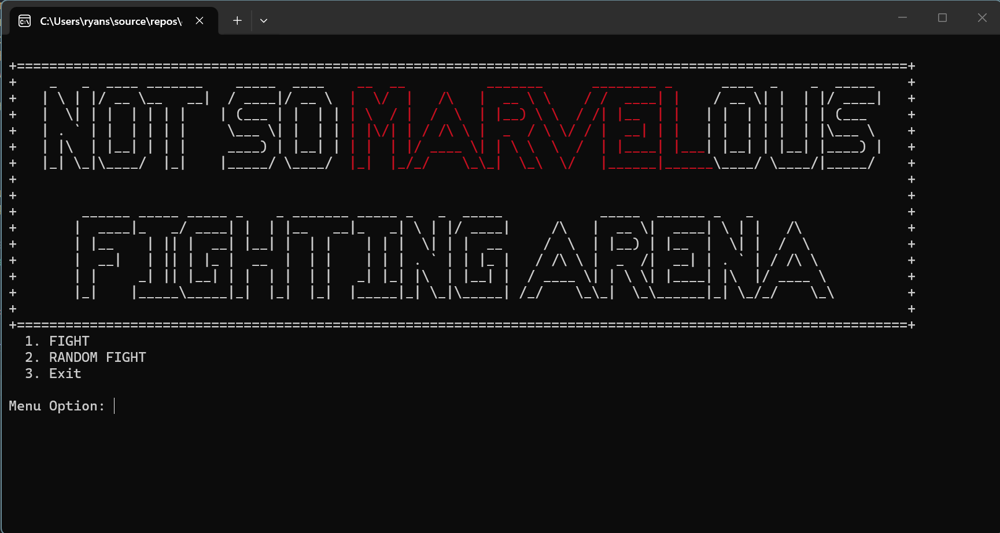

Languages
C++, HTML, CSS
Student Developer Portfolio
I have always loved solving puzzles. The harder the puzzle, the more fun it is for me. I have recently started going to Full Sail University to get a Bachelor's in Simulation Engineering and so far it has been so much fun. Programming has become one of my most favorite things to do. I love learning about programming and I can't wait to experience everything that is out there. I have experience developing object-oriented applications using C++. Strong foundation in problem-solving, debugging, Git version control, and software development practices. Seeking opportunities to continue developing technical skills through academic and personal projects.
About Me
I started programming around my senior year of high school. I learned a little bit of python and fell in love with it. My whole life I have enjoyed building things and solving puzzles so programming became one of my most favorite things to do. After learning C++ at Full Sail, my passion for programming continued to grow. As my career progresses, I want to keep learning new things and build my own projects that will help companies thrive.
C++, HTML, CSS
Visual Studio, Git, GitHub
Object-oriented programming, debugging, file i/o, and clean code
Featured Work

C++ Console Application
The project was a fighting game that allowed the user to select a hero, weapon, and armor; and the villain was randomly selected. Each character had a certain amount of health and damage. The weapons and armor added or subtracted health and damage depending on what you select. You would then fight and choose to either attack or defend until either the hero or villain died.
One challenge that I faced was that the user was able to fight without ever selecting a hero, weapon, or armor. I fixed this by only allowing the user to select Fight which forces the user to have to select a hero, then a weapon, and finally an armor. Once the user selected these things, the fight method would execute. This taught me how to use switch loops in a way that forces the user to do things before executing a method.